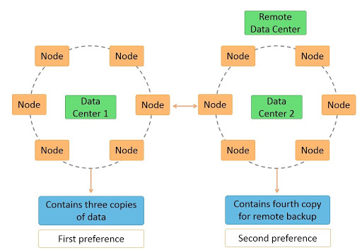
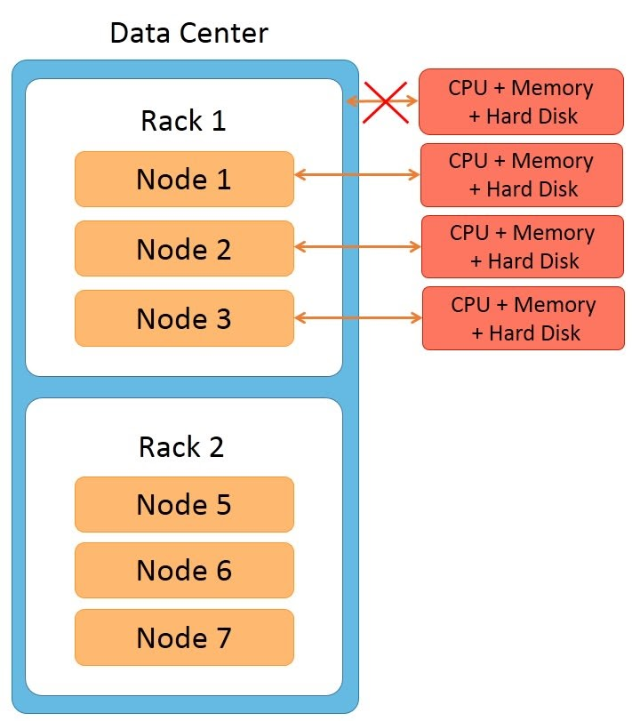
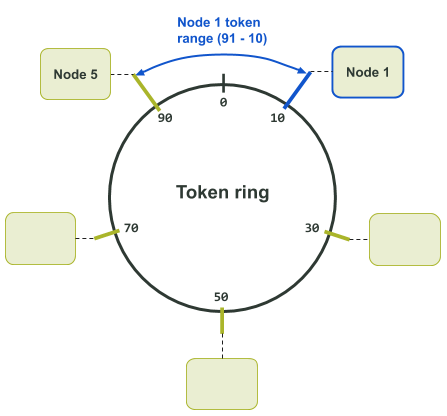
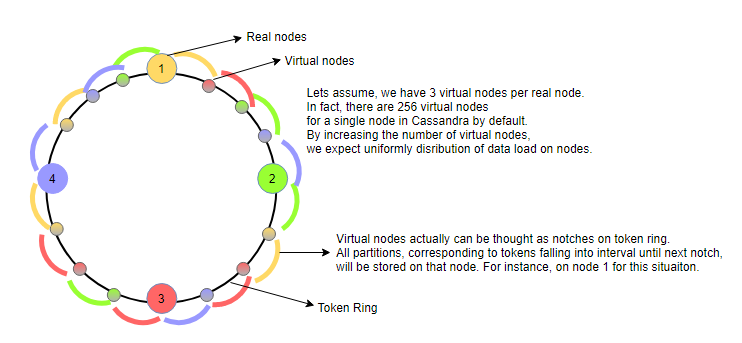
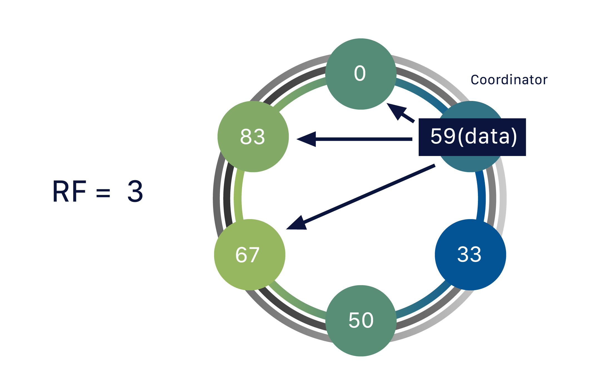
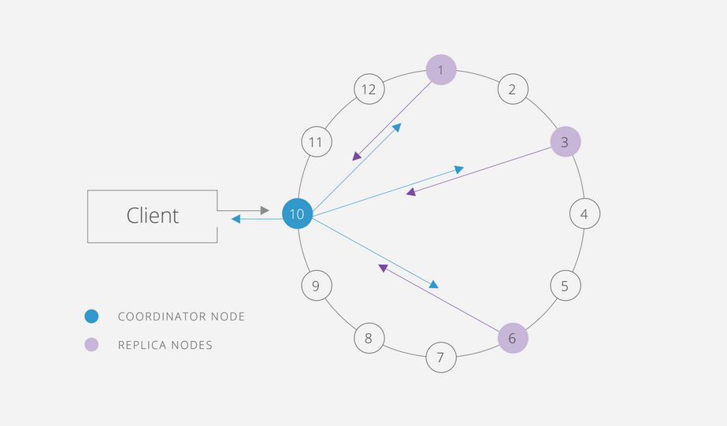
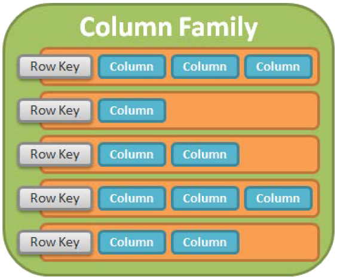
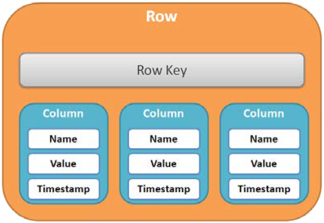

Cassandra
Apache Cassandra is a highly-scalable partitioned row store. Rows are organized into tables with a required primary key.
- Partitioning means that Cassandra can distribute your data across multiple machines
- Row store means that like relational databases, Cassandra organizes data by rows and columns.
1. Cassandra Architecture
Some of the features of Cassandra architecture are as follows:
- Cassandra is designed such that it has no master or slave nodes.
- It has a ring-type architecture, that is, its nodes are logically distributed like a ring.
- Data is automatically distributed across all the nodes.
- Similar to HDFS, data is replicated across the nodes for redundancy.
- Data is kept in memory and lazily written to the disk.
- Hash values of the keys are used to distribute the data among nodes in the cluster.

Additional features of Cassandra architecture are:
- Cassandra architecture supports multiple data centers.
- Data can be replicated across data centers.
You can keep three copies of data in one data center and the fourth copy in a remote data center for remote backup. Data reads prefer a local data center to a remote data center.

Node
Node is the place where data is stored. It is the basic component of Cassandra.
Rack
A rack is a group of machines housed in the same physical box.

- All machines in the rack are connected to the network switch of the rack
- The rack’s network switch is connected to the cluster.
- All machines on the rack have a common power supply. It is important to notice that a rack can fail due to two reasons: a network switch failure or a power supply failure.
- If a rack fails, none of the machines on the rack can be accessed. So it would seem as though all the nodes on the rack are down.
Datacenter
A datacenter is a logical set of racks/ nodes. A common use case is AWS-EAST vs AWS-WEST...
Cluster
The cluster is the collection of many data centers.

2. Data distribution and replication
2.1 Data Partitions
A partition key is converted to a token by a partitioner. The tokens are signed integer values between -2^63 to +2^63-1, and this range is referred to as token range.
If we consider there are only 100 tokens used for a Cassandra cluster with three nodes. Each node is assigned approximately 33 tokens like
1 2 3 | |
If there are nodes added or removed, the token range distribution should be shuffled to suit the new topology. This process takes a lot of calculation and configuration change for each cluster operation.

If one node is removed, data in removed node is placed on the next neighbor node in clockwise manner.

2.2 Virtual nodes/Vnodes
Virtual nodes in a Cassandra cluster are also called vnodes. Vnodes can be defined for each physical node in the cluster. Each node in the ring can hold multiple virtual nodes.
The default number of Vnodes owned by a node in Cassandra is 256, which is set by num_tokens property. When a node is added into a cluster, the token allocation algorithm allocates tokens to the node. The algorithm selects random token values to ensure uniform distribution.
In your case you have 6 nodes, each set with 256 token ranges so you have 6*256 token ranges and each psychical node contains 256 token ranges.

2.3 Replication
The data in each keyspace is replicated with a replication factor. There is one primary replica of data that resides with the token owner node as explained in the data partitioning section. The remainder of replicas is placed by Cassandra on specific nodes using the replica placement strategy.
The total number of replicas for a keyspace across a Cassandra cluster is referred to as the keyspace's replication factor. A replication factor of one means that there is only one copy of each row in the Cassandra cluster. A replication factor of two means there are two copies of each row, where each copy is on a different node. All replicas are equally important; there is no primary or master replica.
There are two settings that mainly impact replica placement:
- First is snitch, which determines the data center, and the rack a Cassandra node belongs to, and it is set at the node level
- The second setting is the replication strategy. The replication strategy is set at the keyspace level. There are two strategies: SimpleStrategy and NetworkTopologyStrategy.
SimpleStrategy: does not consider racks and multiple data centers. It places data replicas on nodes sequentially. NetworkTopologyStrategy: is rack aware and data center aware

2.4 Consistency level
The Cassandra consistency level is defined as the minimum number of Cassandra nodes that must acknowledge a read or write operation before the operation can be considered successful. Different consistency levels can be assigned to different Edge keyspaces.
You can find all cassandra's consistency level here

Write Consistency
- A client sends a write request to the coordinator.
- The coordinator forwards the write request (INSERT, UPDATE or DELETE) to all replica nodes whatever write CL you have set.
- The coordinator waits for n number of replica nodes to respond. n is set by the write CL.
- The coordinator sends the response back to the client.
Read Consistency
- A client sends a read request to the coordinator.
- The coordinator forwards the read (SELECT) request to n number of replica nodes. n is set by the read CL.
- The coordinator waits for n number of replica nodes to respond.
- The coordinator then merges (finds out most recent copy of written data) the n number of responses to a single response and sends response to the client.
3. Data storage
Cassandra processes data at several stages on the write path, starting with the immediate logging of a write and ending in with a write of data to disk:
- Logging data in the commit log
- Writing data to the memtable
- Flushing data from the memtable
- Storing data on disk in SSTables

- Commitlogs are an append only log of all mutations local to a Cassandra node. Any data written to Cassandra will first be written to a commit log before being written to a memtable. This provides durability in the case of unexpected shutdown. On startup, any mutations in the commit log will be applied to memtables.
- Memtables are in-memory structures where Cassandra buffers writes. In general, there is one active memtable per table. Eventually, memtables are flushed onto disk and become immutable SSTables. This can be triggered in several ways:
- The memory usage of the memtables exceeds the configured threshold (see
memtable_cleanup_threshold) - The
commit-logapproaches its maximum size, and forces memtable flushes in order to allow commitlog segments to be freed - SSTables are the immutable data files that Cassandra uses for persisting data on disk.
4. Data Model
The Cassandra data model uses the same terms as Google BigTable, for example, column family, column, row, etc. Some of these terms also exist in the relational data model but have different meanings.
Keyspace
A keyspace is analogous to a schema or database in a relational model. Each Cassandra cluster has a system keyspace to store system-wide metadata. Keyspace contains replication settings that control how data is distributed and replicated in clusters.
Syntax:
1 | |
Strategy:
- Simple Strategy: Simple strategy is used when you have just one data center. In this strategy, the first replica is placed on the node selected by the partitioner. Remaining nodes are placed in the clockwise direction in the ring without considering rack or node location.
- Network Topology Strategy: Network topology strategy is used when you have more than one data centers. In this strategy, you have to provide replication factor for each data center separately. Network topology strategy places replicas in nodes in the clockwise direction in the same data center. This strategy attempts to place replicas in different racks.
Replication Factor:
Replication factor is the number of replicas of data placed on different nodes. For no failure, 3 is good replication factor. More than two replication factor ensures no single point of failure. Sometimes, the server can be down, or network problem can occur, then other replicas provide service with no failure.
Eg:
1 | |
Column Family

A row key in the column family must be unique and be used to identify rows. Although not the same, the column family can be analogous to a table in a relational database. Column families provide greater flexibility by allowing different columns in different rows.
Syntax:
1 2 3 4 5 6 7 8 | |
- Single Primary Key
1 | |
In the single primary key, there is only a single column. That column is also called partitioning key. Data is partitioned on the basis of that column.
- Compound Primary Key
1 | |
In above syntax, ColumnName1 is the partitioning key and ColumnName2 is the Clustering key. Data will be partitioned on the basis of ColumnName1 and data will be clustered on the basis of ColumnName2. Clustering is the process that sorts data in the partition.
- Compound Partitioning key
1 | |
In above syntax, ColumnName1 and ColumnName2 are the compound partition key. Data will be partitioned on the basis of both columns ColumnName1 and ColumnName2 and data will be clustered on the basis of the ColumnName3.
Cassandra index
Cassandra creates indexes on the data during the ‘create index’ statement execution.
- After creating an index, Cassandra indexes new data automatically when data is inserted.
- The index cannot be created on primary key as a primary key is already indexed.
- Indexes on collections are not supported in Cassandra.
- Without indexing on the column, Cassandra can’t filter that column unless it is a primary key.
That’s why, for filtering columns in Cassandra, indexes needs to be created.
Syntax
1 | |
Row
Each row consists of a row key — also known as the primary key — and a set of columns, as shown in the following figure.

Each row may have different column names. That is why Cassandra is row-oriented and column-oriented. There are no timestamps for the row.
Column
A column is the smallest data model element in Cassandra. Although it also exists in a relational database, the column in Cassandra is different. The figure below shows that each column consists of a column name, column value, timestamp, and TTL ( Time-To-Live ).

The timestamp is used for conflict resolution by client applications during write operations. Time-To-Live is an optional expiration value that is used to mark columns that are deleted after expiration.
Time-To-Live:
During data insertion, you have to specify ‘ttl’ value in seconds. ‘ttl’ value is the time to live value for the data. After that particular amount of time, data will be automatically removed.
For example, specify ttl value 100 seconds during insertion. Data will be automatically deleted after 100 seconds. When data is expired, that expired data is marked with a tombstone.
A tombstone exists for a grace period. After data is expired, data is automatically removed after compaction process.
Syntax:
1 | |
Cassandra Data Model Rules
Cassandra does not support joins, group by, OR clause, aggregations, etc. So you have to store your data in such a way that it should be completely retrievable. So these rules must be kept in mind while modelling data in Cassandra.
What cassandra does not support:
- CQL does not support aggregation queries like max, min, avg.
- CQL does not support group by, having queries.
- CQL does not support joins.
- CQL does not support OR queries.
- CQL does not support wildcard queries.
- CQL does not support Union, Intersection queries.
- Table columns cannot be filtered without creating the index.
- Greater than (>) and less than (<) query is only supported on clustering column.
Cassandra query language is not suitable for analytics purposes because it has so many limitations.
5. Data Modeling in Cassandra example
5.1 Facebook Posts
Suppose that we are storing Facebook posts of different users in Cassandra. One of the common query patterns will be fetching the top N posts made by a given user. Thus we need to store all data for a particular user on a single partition
1 2 3 4 5 6 | |
Now, let's write a query to find the top 20 posts for the user Anna:
1 | |
5.2 Gyms Across the Country
Suppose that we are storing the details of different partner gyms across the different cities and states of many countries and we would like to fetch the gyms for a given city.
Also, let's say we need to return the results having gyms sorted by their opening date.
1 2 3 4 5 6 7 8 9 10 | |
Now, let's look at a query that fetches the first ten gyms by their opening date for the city of Phoenix within the U.S. state of Arizona:
1 2 3 | |
Next, let’s see a query that fetches the ten most recently-opened gyms in the city of Phoenix within the U.S. state of Arizona:
1 2 3 4 | |
Note: As the last query's sort order is opposite of the sort order defined during the table creation, the query will run slower as Cassandra will first fetch the data and then sort it in memory.
5.3 E-commerce Customers and Products
Let's say we are running an e-commerce store and that we are storing the Customer and Product information within Cassandra. Let's look at some of the common query patterns around this use case:
- Get Customer info
- Get Product info
- Get all Customers who like a given Product
- Get all Products a given Customer likes
We will start by using separate tables for storing the Customer and Product information. However, we need to introduce a fair amount of denormalization to support the 3rd and 4th queries shown above.
We will create two more tables to achieve this – “Customer_by_Product” and “Product_by_Customer“.
1 2 3 4 5 6 7 8 9 10 11 12 13 14 15 16 17 18 19 20 21 22 23 24 25 26 27 28 29 | |
Query to find the ten Customers who most recently liked the product “Pepsi“:
1 | |
Query that finds the recently-liked products (up to ten) by a customer named “Anna“:
1 | |